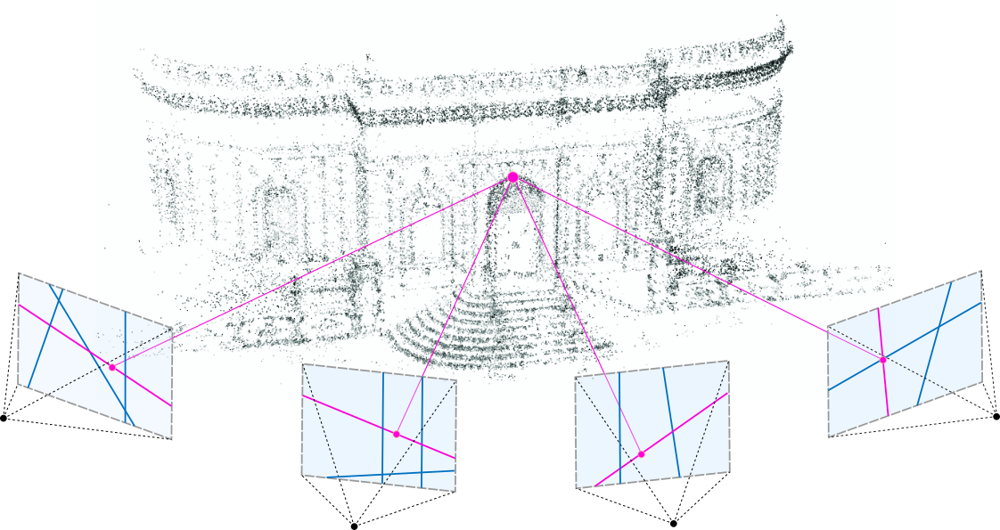
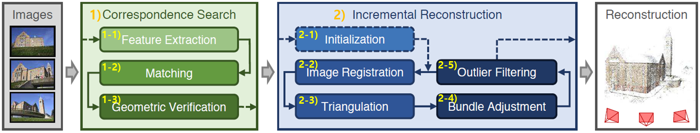

1. Introduction
What is Structure-from-Motion?
Structure from Motion (SfM) is a computer vision technique that reconstructs 3D structures from 2D images. It's widely used in various fields such as drone mapping, robotics, and virtual reality. The primary goal of SfM is to estimate both the camera positions and the 3D point cloud from multiple overlapping images.
COLMAP: The Gold Standard in SfM

Figure credit: COLMAP
COLMAP is a widely recognized software for Structure from Motion (SfM) and Multi-View Stereo (MVS), playing a crucial role in the 3D reconstruction community.
Developed by Johannes L. Schönberger, COLMAP has become the gold standard for 3D reconstruction tasks due to its robustness, accuracy, and versatility. It offers several robust features:
How COLMAP Works

- Feature Extraction: The first step in COLMAP is to detect and extract features from input images using methods like SIFT (Scale-Invariant Feature Transform).
- Feature Matching: COLMAP matches features between pairs of images to find correspondences, which are essential for 3D reconstruction.
- Incremental Reconstruction: COLMAP incrementally builds the 3D structure by starting with an initial image pair and gradually adding more images, refining the 3D model along the way.
- Bundle Adjustment: After the incremental reconstruction, COLMAP performs global optimization (Bundle Adjustment) to refine the camera poses and 3D points.
- Dense Reconstruction: Finally, COLMAP generates a dense point cloud by performing Multi-View Stereo on the calibrated images.
Limitations of COLMAP
Despite its strengths, COLMAP has some limitations:
- Computational Resources: COLMAP is computationally intensive, requiring significant processing power and memory, especially for large-scale reconstructions.
- Sensitivity to Image Quality: The accuracy of COLMAP heavily depends on the quality and overlap of the input images. Poorly aligned or low-quality images can lead to errors in the reconstruction.
- Limited Scalability: While COLMAP works well for small to medium-sized datasets, it can struggle with extremely large datasets due to memory and processing constraints.
- Time-Consuming: The reconstruction process, especially dense reconstruction, can be time-consuming, making it less suitable for real-time applications.
2. Recent Developments: Deep Learning-Based Camera Pose Reconstruction
To overcome the limitations of traditional SfM methods like COLMAP, recent developments have introduced deep learning-based approaches for camera pose reconstruction. In the later of this post, we’ll compare two notable methods: VGGSfM and MASt3R, evaluating their performance and discussing their strengths and weaknesses.

Figure credit: some linke
Contents Link: hyperlink text
- BOLD contents
- BOLD contents
code blockcontents contents contents contents
// code
a = 3;
table
| Title1 | Title2 |
|---|---|
| contents1 | contents2 |
| Spaned Title | |
| 1 | 2 |
| 번호 | 제목 | 이름 | |
|---|---|---|---|
| 1 | 테이블-1 | 홍길동 | 10 |
| 테이블-2 | 둘리 | 20 | |
| 테이블-3 | 도우너 | 30 | |